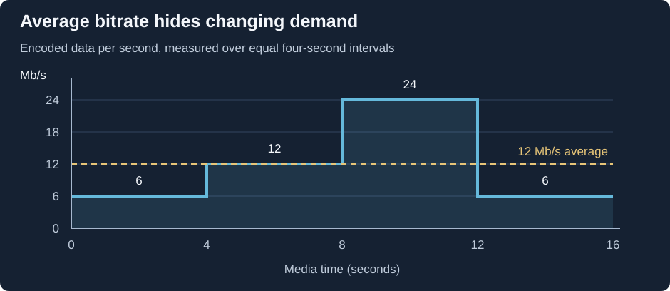

Bitrate Variation
A film's encoded data can be unevenly distributed. In this constructed example, each interval represents four seconds of media:

Encoded media rates in four-second intervals. These are illustrative allocations, not network measurements.
The four intervals contain 24, 48, 96, and 24 megabits. That is 192 megabits over 16 seconds, giving a whole-example average of 12 Mb/s. The same average could describe a much flatter allocation.
Follow the buffered data
Now give the connection an uninterrupted 18 Mb/s arrival rate and start the simplified calculation with an empty playback buffer. Assume playback consumes data at each interval's listed rate and the reader can fetch ahead.
| Interval | Media consumes | Connection supplies | Change in buffered data | Buffer after interval |
|---|---|---|---|---|
| First four seconds | 24 Mb | 72 Mb | +48 Mb | 48 Mb |
| Next four seconds | 48 Mb | 72 Mb | +24 Mb | 72 Mb |
| Demanding four seconds | 96 Mb | 72 Mb | −24 Mb | 48 Mb |
| Final four seconds | 24 Mb | 72 Mb | +48 Mb | 96 Mb |
The demanding interval uses data faster than it arrives, but it finishes successfully because earlier intervals stored enough data. The 24-megabit deficit consumes 3 MB of that reserve.
This calculation omits finite buffer capacity, headers, request delays, and variable throughput. Its purpose is to expose the causal relationship: arrival minus consumption changes the reserve. In a real finite file the reader also stops requesting once it has obtained the remaining content; the final row is a notional continuing-arrival calculation.
Seeking changes the starting state
Start directly at the demanding interval instead. Without its earlier reserve, the same 18 Mb/s connection cannot supply the whole 24 Mb/s interval in real time. The player must accumulate data before presenting it, obtain it faster, or use a lower-demand output.
That explains why a movie can play smoothly from the beginning yet pause after a seek, or buffer around the same busy scene in an Emby session. The important quantities are the delivered media's demand, available arrival rate, and reserve at that moment.
A peak must also have a measurement interval. One unusually large frame, four demanding seconds, and a ten-minute high-rate section put different demands on a buffer. A single peak number loses that duration information.